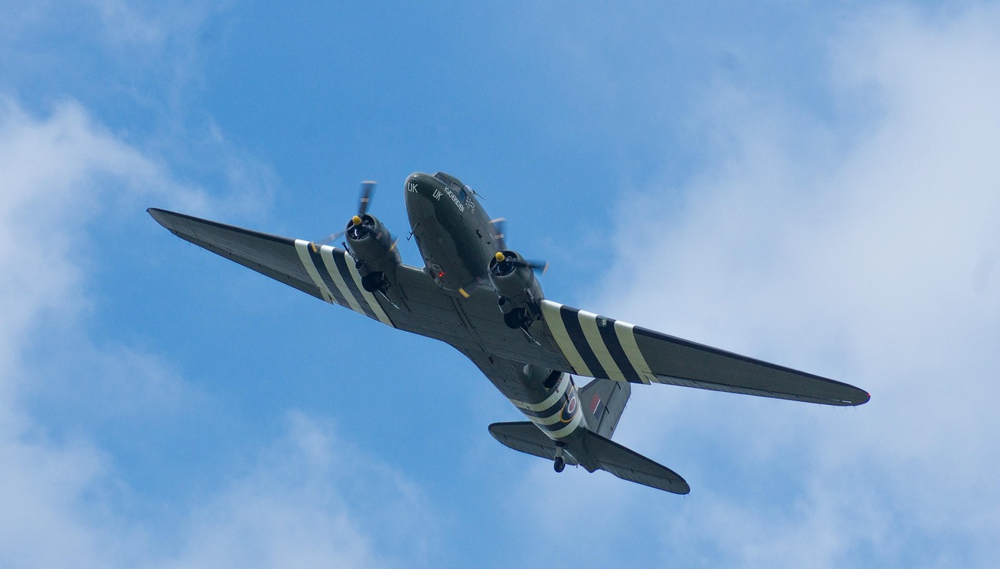
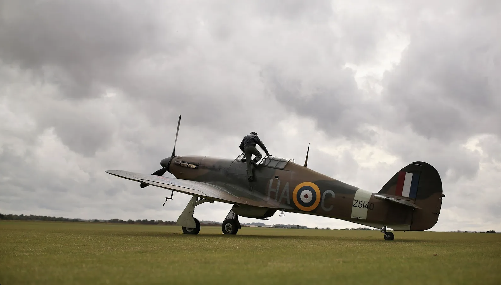

In this section the history of the Battle of Britain aircraft and pilots will be explored.
The aircraft used in the Battle of Britain included the British and german aircraft. The British aircraft included the Spitfire, Hurricane, and Lancaster Bomber. The German aircraft included the Messerschmitt Bf 109 and the Heinkel He 111. These aircraft played a crucial role in the outcome of the battle, with the Spitfire and Hurricane being particularly effective in defending against German attacks.




links to site with more information
Learn more
about
the Spitfire